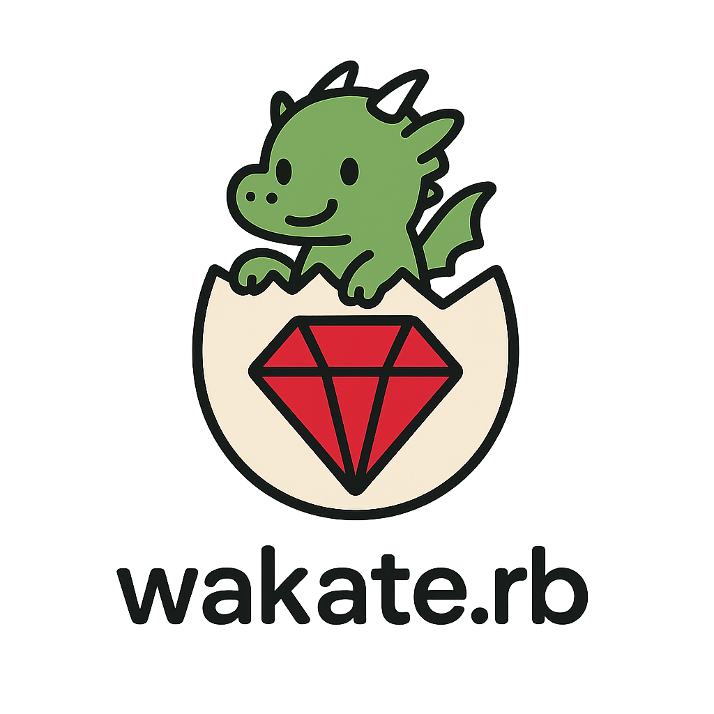
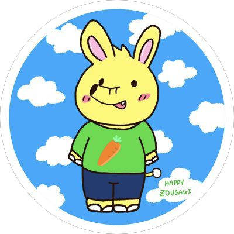
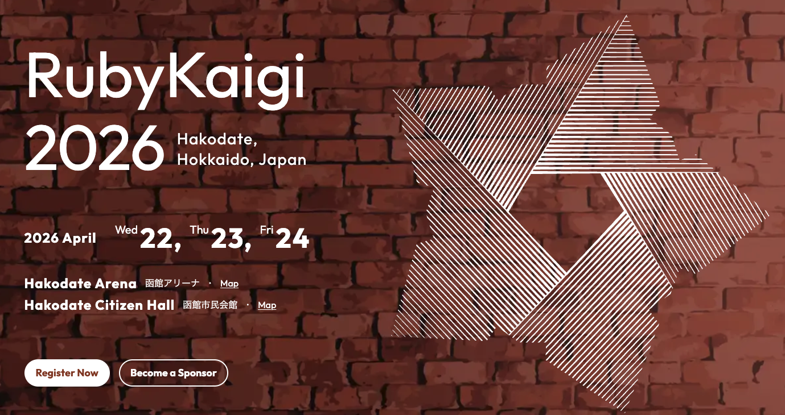
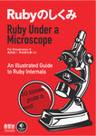

Wakate.rb #3
2026年2月3日

Wifi
ネットワーク:
パスワード:
ハッシュタグ
#wakate_rb
自己紹介

- 名前: yuhi (@yuhi_junior)
- 所属: プレックス 24卒 → スマートバンク(3月~)
- 業務: Ruby on Rails
- 最近はポーカーにはまっています
Wakate.rbとは？
Wakate.rbとは？
若手のRubyist同士が繋がり、
Rubyを盛り上げるためのコミュニティ
今回のテーマ
RubyKaigi 2026に向けた勉強会キックオフ
RubyKaigi 2026
4月22〜24日 開催
年に一度のRubyコミュニティの祭典

RubyKaigi、正直むずくない？
RubyKaigiが難しく感じられる理由
- 普段の業務では使わないトピックが多い
- 前提知識が暗黙的で、話の文脈を追うのが難しい
- 初参加だと何をどこまで理解すればいいのかが分からない
RubyKaigiとの付き合い方
チーフオーガナイザー @a_matsuda さんの言葉
RubyKaigiは「勉強会」ではない
- 勉強しに来ないでいいです
- 個別のトークを理解することを目的にしない方がいいです
- たぶん絶望するので
チーフオーガナイザー @a_matsuda さんの言葉
本物のプログラマーたちのすっごいカッコいい姿が見れる
自分が普段使っている道具が、こういう人たちがこういうことを考えて作ってるんだ！みたいなのがわかるようになる
STORES CTO @ffu_ さんの言葉
わからなくていいのだろうかっていう引け目を感じることは一切必要なくて、こんなにわからないことがわかったみたいな、わからないジャンルを知ること自体がもはや成果だと思います。
RubyKaigiの楽しみ方
- RubyKaigiは勉強会ではなく、興味を見つける場所
- 登壇者やコミッターの方達に触れて、Rubyへの愛着を深める場所
- 年に一度のRubyコミュニティのお祭り
- 「未知の未知」を「既知の未知」にする場所
Wakate.rbが提供したいこと
Wakate.rbがRubyKaigiで提供したいこと
- 一緒にセッションやブースを回る仲間を見つける
- RubyKaigi期間中のミートアップを盛り上げる
RubyKaigiをお祭りとして全力で楽しめるように！
勉強会の設計
目指したい勉強会の在り方
-
オンライン：週1回・1時間のDiscord輪読会
-
対面：月1回程度
勉強したいコンテンツ

- RubyでつくるRuby
- RubyインタプリタをRubyで作成できる本
- 言語処理系の大まかな外観をつかめる
- Rubyのしくみ
- 過去のRubyKaigiセッションや解説記事
- RubyKaigi 2026のセッションの予習
スケジュール
| 日程 |
形式 |
コンテンツ |
| 2026/2/1 |
対面 |
キックオフ・RubyKaigiを楽しむために |
| 2026/2/10 |
オンライン |
RubyでつくるRuby |
| 2026/2/17 |
オンライン |
RubyでつくるRuby |
| 2026/2/24 |
オンライン |
RubyでつくるRuby |
| 2026/3/3 |
オンライン |
Rubyのしくみ |
オンライン輪読会について
毎週火曜 21:00〜22:00
Discord上で開催予定
ESAでオンライン勉強会を進めます。
Discordの#studyチャンネルよりご登録ください。
今日の内容
キックオフ・RubyKaigiを楽しむために
若手Rubyistでワイワイしましょう！
タイムテーブル
| 時間 |
内容 |
| 18:30 ~ |
受付 |
| 19:00 ~ |
あいさつ |
| 19:15 ~ |
LT会 |
| 20:05 ~ |
懇親会 |
| 21:30 ~ |
片付け・撤収 |
Rubyクイズ
各テーブルにRubyクイズの紙を配っています
懇親会の際のアイスブレイクとして解いてみてください！
Discordサーバー
RubyKaigi勉強会用のDiscordサーバーを作成しました。
connpass内のリンクよりご参加ください！
参考文献
- https://speakerdeck.com/a_matsuda/rubykaigi-introduction
- https://product.st.inc/entry/ronyori-ugokumono29
- https://www.lambdanote.com/products/ruby-ruby
- https://tatsu-zine.com/books/ruby-under-a-microscope-ja